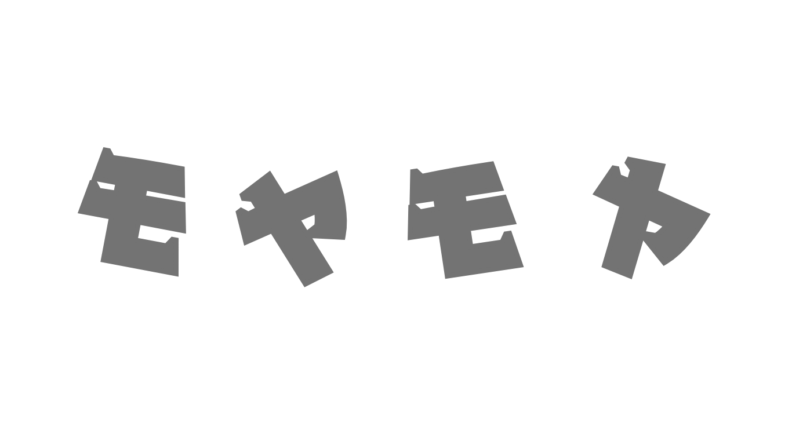
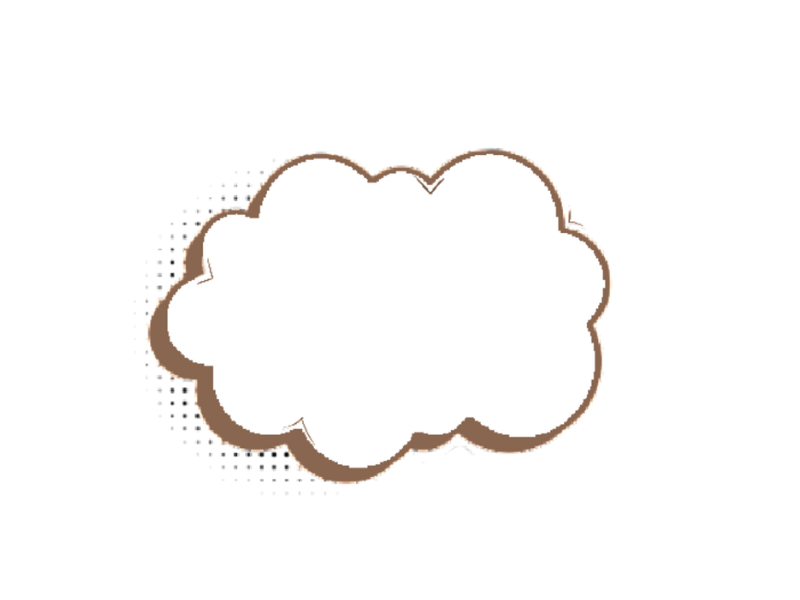
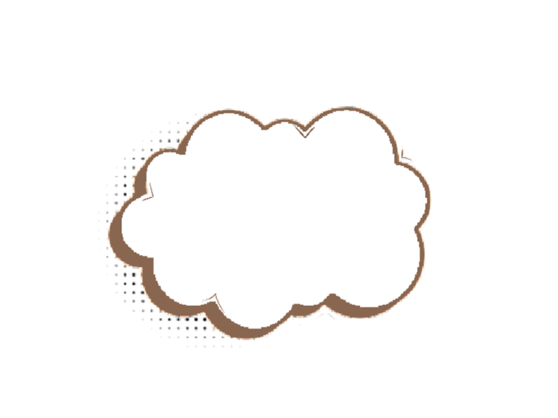
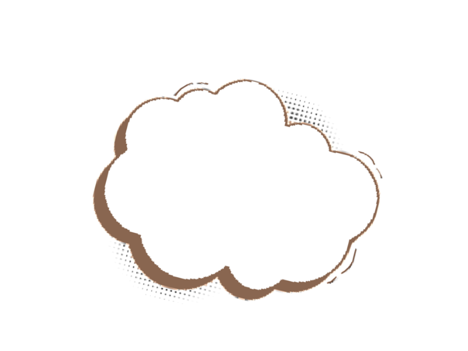
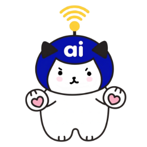

放っておいていませんか?
電話に出られなくて
口コミがなかなか
AIってなにから専門用語より先に、目の前の困りごとから。ひとつずつ一緒に片付けていきます。
AI検索で見つけてもらうための、文章と情報の整え方から。
見つけてもらった先で、ちゃんと惹きつけるページを。
出しっぱなしにしない、成果を見ながらの広告運用。
人が対応しきれない時間帯も、取りこぼさない仕組みに。
事業の顔になる部分を、丁寧に形にします。

"思考は、一人だと泡のように消えていく"
誰かとの対話があって、はじめて形になるのです。私はそれをAIとの壁打ちで知りました。
経営も同じで、優れたツールを持っていても、受け身では未来はありません!
《Aiaiは、綺麗事ではなく、構造そのものから一緒に組み直します》